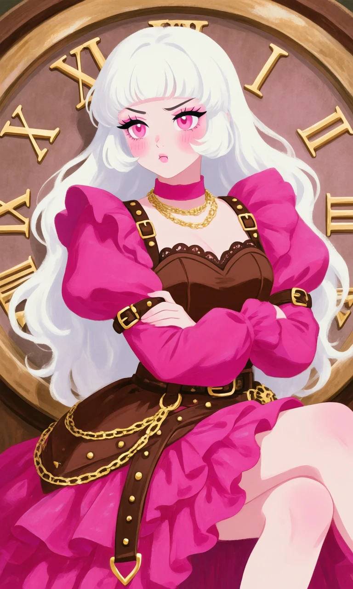
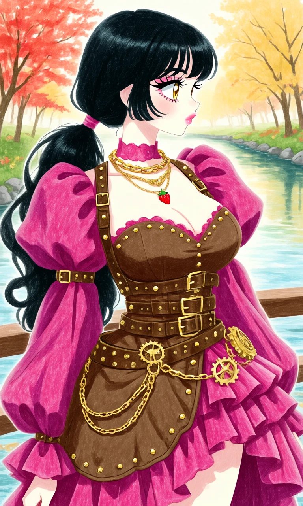

Strawberry Clockwork

Outfit Prompt
pink choker, layered necklaces, chain necklace, puffy sleeves, magenta sleeves, balloon sleeves, ruffled sleeves, voluminous sleeves, brown bodice, strapless top, sweetheart neckline, scalloped edge, gold studs, buckles, multiple belts, waist belts, gold buckles, chain belts, dangling chains, gear buckle, asymmetrical skirt, high-low skirt, magenta skirt, ruffled skirt, layered skirt, brown straps, harness straps, gold hardware, studded straps, side panel, brown apron panel, steampunk details, steampunk fashion, strawberry theme, sweet gothic, harness dress,
Outfit Examples



